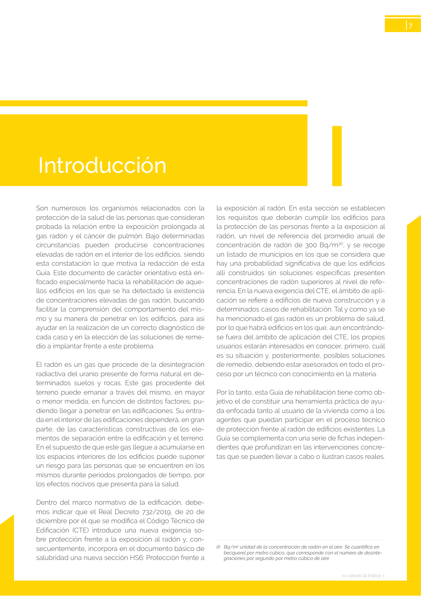
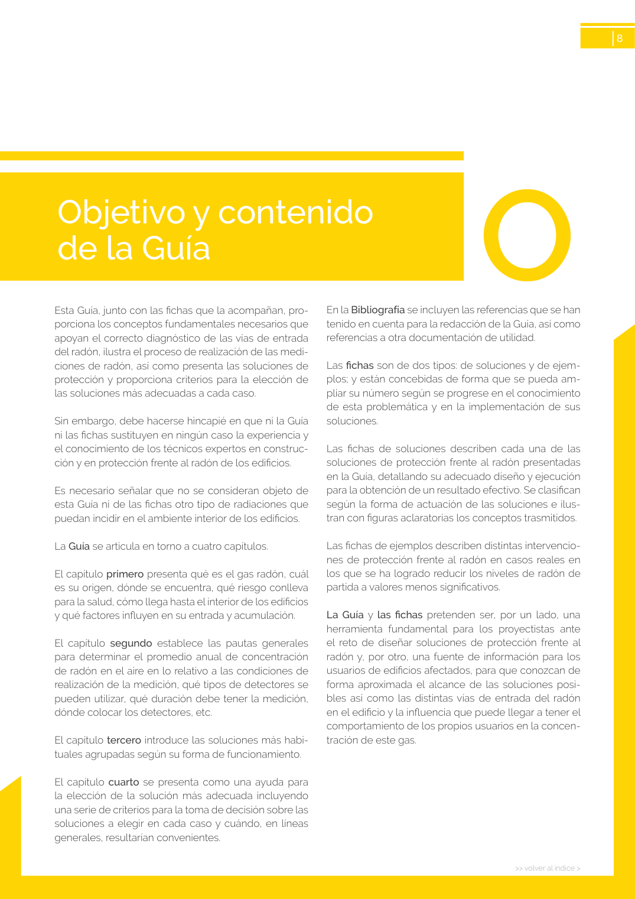

<!doctype html>
<html lang="es"><head><meta charset="utf-8">
<meta name="viewport" content="width=device-width, initial-scale=1">
<title>Introducción</title><link rel="stylesheet" href="../estilo.css">
</head><body>
<nav><a href="../index.html">Índice</a> › <a href="../doc/guia-pdf-f3314b0414fe-sin-fecha-e58e54b822cf.html">GUIA</a></nav>

<h1>Introducción</h1>
<header class="meta"><p><strong>Guia de rehabilitacion frente al radon Fichas</strong> · edición sin-fecha · capa guia</p>
<p>Documento <code>GUIA-PDF-f3314b0414fe</code> · SHA-256 del PDF <code>e58e54b822cf4ab00e258f0eb50c0f06a8c04e3730a7f530d224485e2a5bb02e</code></p>
<p><a href="../../contenido/docs/GUIA-PDF-f3314b0414fe/sin-fecha__e58e54b822cf/fuente.pdf">Copia fiel del PDF fuente</a> · <a href="https://www.codigotecnico.org/pdf/GuiasyOtros/GuiaRadon/Guia_de_rehabilitacion_frente_al_radon+Fichas.pdf">Fuente oficial</a></p>
<p><a href="https://www.codigotecnico.org/Guias/GuiaRadon.html">Ficha de la disposición en la fuente oficial</a></p>
<div class="cita"><p><a href="../../contenido/docs/GUIA-PDF-f3314b0414fe/sin-fecha__e58e54b822cf/fuente.pdf#page=2">Créditos y autoría en el PDF fuente</a>. Reproducción con cita de fuente y autores.</p>
<p>Permiso literal: Se permite la reproducción total o parcial del contenido de este nible en el momento de su publicación. No se aceptará por las institu­ documento siempre y cuando se cite la fuente original</p>
<details><summary>Leer los créditos completos y la autoría</summary><pre class="literal">Este documento ha sido elaborado por el Instituto de ciencias
de la construcción Eduardo Torroja (IETcc) bajo la supervisión
de la Dirección General de Agenda Urbana y Arquitectura del
Ministerio de Transportes, Movilidad y Agenda Urbana (MITMA).

El IETcc, perteneciente al Consejo Superior de Investigaciones
Científicas (CSIC), es el centro de investigación en edificación
de referencia en España. La Unidad de Calidad en la Construc­
ción del IETcc asesora al MITMA en la elaboración del Código
Técnico de la Edificación que, desde el año 2019, cuenta con la
sección HS6 Protección frente a la exposición al radón.

Dirección y Coordinación:
Ministerio de Transportes, Movilidad y Agenda Urbana
 Isabel Marcos Anasagasti
 Raquel Lara Campos
 Eduardo González de Prado
Instituto de ciencias de la construcción Eduardo Torroja CSIC
 Pilar Linares Alemparte

Autoras:
 Pilar Linares Alemparte
 Sonia García Ortega

Colaboradoras:
 Virginia Sánchez Ramos
 Karina Angélica García Pardo

Edita:
 Centro de Publicaciones Secretaría General Técnica
 Ministerio de Transportes, Movilidad y Agenda Urbana©

Entidad colaboradora:
 Consejo Superior de Investigaciones Científicas · CSIC
 Ministerio de Ciencia e Innovación

    Catálogo de publicaciones de la Administración General
    del Estado: publicacionesoficiales.boe.es

    Centro virtual de publicaciones del Ministerio de Transpor­
     tes, Movilidad y Agenda Urbana: www.mitma.gob.es

    Página web del Código Técnico de la Edificación:

                                                                                                                                                                              SECRETARÍA                                                                                                                                                                     GENERAL                                                                                                                                                                         DE    www.codigotecnico.org                                                                                                                                              AGENDA URBANA                                                                                                                                                                           Y VIVIENDA                                                                                                                                                 MINISTERIO                                                                                                           GOBIERNO                                                                                                                           DE                                                                                                                                           TRANSPORTES,                                                                                                                                                 MOVILIDAD                                                                                                             DE ESPAÑA                                                                                                                               Y AGENDA                                                                                                                           URBANA                                                                                                                                                               DIRECCIÓN                                                                                                                                                                     GENERAL                                                                                                                                                                         DE
Maquetación y diseño gráfico:                                                                                                     AGENDA URBANAY ARQUITECTURA
 Lapizmente. Estrategia • Diseño Gráfico


                                                                                                                                             CIENCIAFotografía portada:                                                                                GOBIERNODE ESPAÑA      MINISTERIODEE INNOVACIÓN
 Sonia García Ortega

Los contenidos o ideas recogidas en este documento pertenecen a
sus autores. Este documento está basado en el conocimiento dispo­     Se permite la reproducción total o parcial del contenido de este
nible en el momento de su publicación. No se aceptará por las institu­     documento siempre y cuando se cite la fuente original y a sus
ciones ni los autores implicados responsabilidad de ningún tipo por el                                                                    autores.
uso de estas recomendaciones. Las figuras tienen carácter ilustrativo
y no deben interpretarse como detalles constructivos.</pre></details></div>
<div class="aviso"><strong>Alcance y límites</strong><ul><li>Extracción automática sin revisión técnica humana completa. Contraste tablas, fórmulas, notas y excepciones con el PDF. La edición disponible no determina la vigencia ni la aplicabilidad a un proyecto.</li><li>Guia o documento divulgativo; no es texto normativo.</li><li>Extracción automática; el cotejo humano está pendiente.</li><li>Semántica y tablas no equivalen a validación exhaustiva.</li></ul></div></header>
<div class="cita">ID técnico a0010 · páginas físicas <a href="../pagina/guia-pdf-f3314b0414fe-sin-fecha-e58e54b822cf__p0007.html">7</a>, <a href="../pagina/guia-pdf-f3314b0414fe-sin-fecha-e58e54b822cf__p0008.html">8</a></div>
<nav><a href="guia-pdf-f3314b0414fe-sin-fecha-e58e54b822cf__a0009.html">← a0009</a> · <a href="guia-pdf-f3314b0414fe-sin-fecha-e58e54b822cf__a0011.html">a0011 →</a></nav>
<p>Formatos: <a href="../../contenido/docs/GUIA-PDF-f3314b0414fe/sin-fecha__e58e54b822cf/apartado/a0010__introduccion.json">JSON del segmento</a> · <a href="../../contenido/docs/GUIA-PDF-f3314b0414fe/sin-fecha__e58e54b822cf/apartado/a0010__introduccion.md">Markdown</a></p>
<pre class="literal">Introducción
(i)   Bq/m3 unidad de la concentración de radón en el aire. Se cuantifica en
becquerel por metro cúbico, que corresponde con el número de desinte­
graciones por segundo por metro cúbico de aire

&gt;&gt; volver al índice &gt;
8
Esta Guía, junto con las fichas que la acompañan, pro­
porciona los conceptos fundamentales necesarios que
apoyan el correcto diagnóstico de las vías de entrada
del radón, ilustra el proceso de realización de las medi­
ciones de radón, así como presenta las soluciones de
protección y proporciona criterios para la elección de
las soluciones más adecuadas a cada caso.
Sin embargo, debe hacerse hincapié en que ni la Guía
ni las fichas sustituyen en ningún caso la experiencia y
el conocimiento de los técnicos expertos en construc­
ción y en protección frente al radón de los edificios.
Es necesario señalar que no se consideran objeto de
esta Guía ni de las fichas otro tipo de radiaciones que
puedan incidir en el ambiente interior de los edificios.
La Guía se articula en torno a cuatro capítulos.
El capítulo primero presenta qué es el gas radón, cuál
es su origen, dónde se encuentra, qué riesgo conlleva
para la salud, cómo llega hasta el interior de los edificios
y qué factores influyen en su entrada y acumulación.
El capítulo segundo establece las pautas generales
para determinar el promedio anual de concentración
de radón en el aire en lo relativo a las condiciones de
realización de la medición, qué tipos de detectores se
pueden utilizar, qué duración debe tener la medición,
dónde colocar los detectores, etc.
El capítulo tercero introduce las soluciones más habi­
tuales agrupadas según su forma de funcionamiento.
El capítulo cuarto se presenta como una ayuda para
la elección de la solución más adecuada incluyendo
una serie de criterios para la toma de decisión sobre las
soluciones a elegir en cada caso y cuándo, en líneas
generales, resultarían convenientes.
En la Bibliografía se incluyen las referencias que se han
tenido en cuenta para la redacción de la Guía, así como
referencias a otra documentación de utilidad.
Las fichas son de dos tipos: de soluciones y de ejem­
plos; y están concebidas de forma que se pueda am­
pliar su número según se progrese en el conocimiento
de esta problemática y en la implementación de sus
soluciones.
Las fichas de soluciones describen cada una de las
soluciones de protección frente al radón presentadas
en la Guía, detallando su adecuado diseño y ejecución
para la obtención de un resultado efectivo. Se clasifican
según la forma de actuación de las soluciones e ilus­
tran con figuras aclaratorias los conceptos trasmitidos.
Las fichas de ejemplos describen distintas intervencio­
nes de protección frente al radón en casos reales en
los que se ha logrado reducir los niveles de radón de
partida a valores menos significativos.
La Guía y las fichas pretenden ser, por un lado, una
herramienta fundamental para los proyectistas ante
el reto de diseñar soluciones de protección frente al
radón y, por otro, una fuente de información para los
usuarios de edificios afectados, para que conozcan de
forma aproximada el alcance de las soluciones posi­
bles así como las distintas vías de entrada del radón
en el edificio y la influencia que puede llegar a tener el
comportamiento de los propios usuarios en la concen­
tración de este gas.</pre>
<figure><a href="../../contenido/docs/GUIA-PDF-f3314b0414fe/sin-fecha__e58e54b822cf/figura/p0007.png"></a><figcaption>Página visual 7, para contrastar fórmulas, tablas y figuras.</figcaption></figure>
<figure><a href="../../contenido/docs/GUIA-PDF-f3314b0414fe/sin-fecha__e58e54b822cf/figura/p0008.png"></a><figcaption>Página visual 8, para contrastar fórmulas, tablas y figuras.</figcaption></figure>
<footer>Generado estáticamente desde el corpus normalizado; sin JavaScript ni servicios externos. El HTML es una vista reproducible; conserve la fuente y la edición al citar.</footer>
</body></html>
